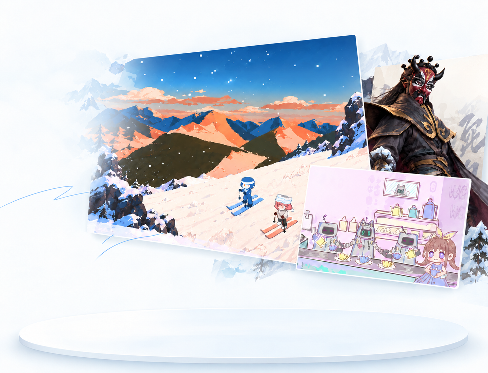

01 / NARRATIVE GAME
01 / NARRATIVE GAME白天滑雪，晚上去山脚下的酒馆。
在一次次往返中，让陌生关系慢慢发生。

游戏、交互与 AI 产品。
从一个问题开始，
让体验真正发生。
白天滑雪，
晚上去山脚下的酒馆。
穿越《成龙历险记》
成为将军，挑战龙叔。
人类假扮机器人，
当一名服务员。
SNOWBAR / 2026
白天在雪道上，夜晚在故事里。
01 / SELECTED WORK
一些可以探索、参与、体验的作品。
从叙事游戏，到城市里的 AI 同行者。
01 / NARRATIVE GAME白天滑雪，晚上去山脚下的酒馆。
在一次次往返中，让陌生关系慢慢发生。
 02 / AI-ASSISTED GAME
02 / AI-ASSISTED GAME人类假扮机器人，当一名服务员。
藏好身份，努力熬到下班。
 03 / 3D ACTION RPG
03 / 3D ACTION RPG穿越《成龙历险记》，成为暗影兵团第十位将军。
以川剧变脸切换面具，与龙叔正面交手。


AI 为你生成一条现在就能出发的路线。
美团黑客松 8 万元奖金获得者。
02 / A BIT ABOUT ME
 Hi, I'm Mars!
Hi, I'm Mars!我是 Mars，实践包括产品设计、游戏策划与 AI 应用。我喜欢把模糊的想法，变成有结构、有反馈、可以被真实体验的东西。
从问题定义、系统设计与交互流程，到技术协作、内容表达和测试迭代，我关注体验成立的全过程。接下来，也想继续探索 HCI 与软硬件交互。
研究用户、场景与现实约束，找到值得解决的问题。
让产品结构、玩法机制与视觉语言，在同一套逻辑里成立。
与团队协作完成可运行版本，再通过测试和反馈持续迭代。
03 / LET'S MAKE SOMETHING